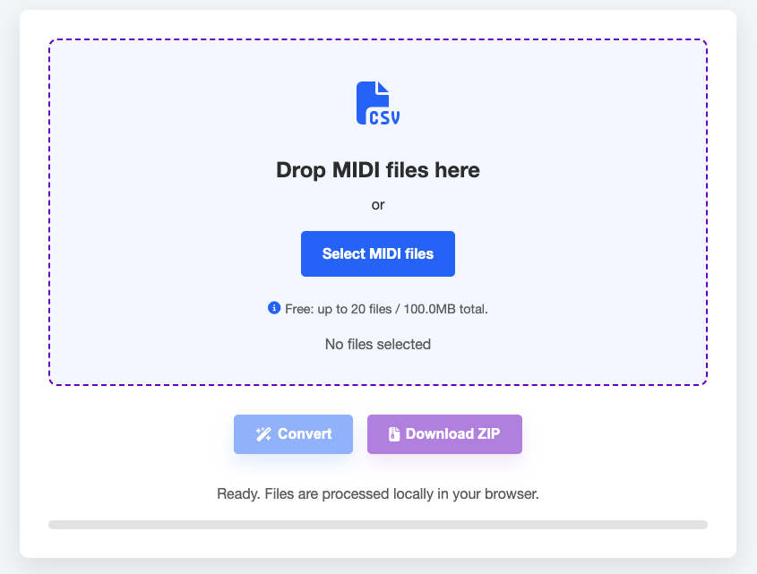
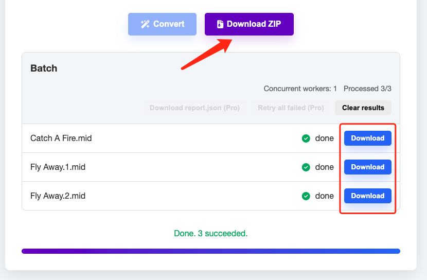
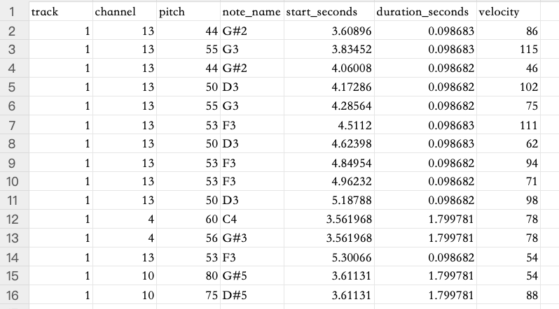
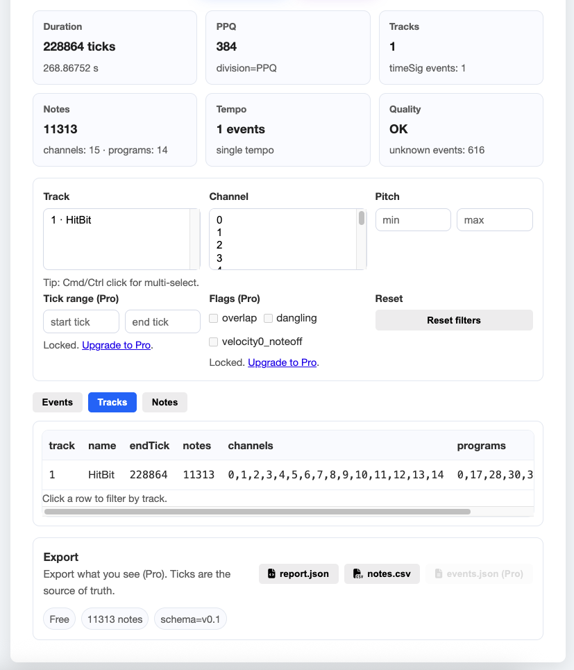

.png)

MIDI to JSON Conversion Guide
Learn a practical workflow for converting MIDI into JSON for web audio projects.
Professional MIDI to JSON Converter for Tone.js & Web Audio Developers
Need to analyze MIDI data in Excel, Google Sheets, or Python? Converting your MIDI files to a note-level CSV is probably the fastest way to get started. This guide walks you through the exact steps, explains what you'll find in the CSV, and answers the most common "wait, why does this look like that?" questions.
The good news: MidiEasy handles MIDI to CSV conversion right in your browser—nothing gets uploaded. Your files never leave your device.
Converter:
/midi-to-csv
Inspector (for debugging MIDI structure):/midi-inspector
Head over to: /midi-to-csv

Just drag and drop one or more .mid files, or click Select MIDI files.
Hit Convert, then download your file(s):

Open the CSV in Excel or Google Sheets and you're good to go.
MidiEasy gives you note-level rows—one row per note event.
Here's a simplified example:
track,channel,pitch,note_name,start_seconds,duration_seconds,velocity
1,0,60,C4,12.480,0.250,96
1,0,64,E4,12.480,0.250,92
1,10,36,C2,12.500,0.125,110
This is totally normal in most cases.
A lot of MIDI files are single-track files (format Type 0, or files that have been exported/merged). When that's the case, all the events live inside one track chunk—so the track value stays 1 for every single row.
What to do: Focus on the channel column instead (and sometimes instrument/program info) to tell different parts apart.

Want to double-check your MIDI file's structure? Use MIDI Inspector.
Create a Pivot Table:
channelCOUNT of rows (or SUM of duration, depending on what you need)This instantly shows you which channels have the most activity.
Sort by velocity in descending order, or try:
velocity > 100Build a pivot table with:
note_name (or pitch)That gives you a pitch histogram.
import pandas as pd
df = pd.read_csv("your_file.csv")
df.head()df.groupby("channel").size().sort_values(ascending=False)df.groupby("channel")["duration_seconds"].sum().sort_values(ascending=False)df.groupby("note_name").size().sort_values(ascending=False).head(20)df["end_seconds"] = df["start_seconds"] + df["duration_seconds"]That's expected for MIDI files with multiple parts.
Here's what you'll typically see:
If you want to see exactly which programs/instruments are assigned to which channels, check out:
/midi-inspector
When the timing doesn't match what you expected, it's usually because of:
Here's what you can try:
start_seconds and duration_seconds)This can happen with:
Try these steps:
/midi-inspector to check for quality issues or unknown eventsIf you're doing a lot of batch conversions, Pro includes retry tools that help you quickly recover from failed conversions.
If you're regularly converting batches of MIDI files, Pro is designed for exactly that:
report.json files (and automatically includes them in ZIP downloads)